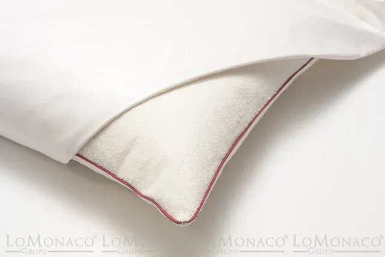

Qué ocurre si no lavas la funda de la almohada

La felicidad está compuesta por pequeños placeres, y no hay nada mejor que poner tu cabeza al final del día en la almohada, sentir el olor a limpio al meterte en la cama y descansar.
Nuestra almohada, es la mejor aliada en nuestros sueños y hasta para algunos compañera de viaje, se merece un “trato” especial, recuerda que pasa un tercio de tu vida contigo, y cuanto menos, no podemos descuidar su higiene.
La almohada, nuestra aliada en el descanso
Una buena almohada nos proporcionará un descanso perfecto. Existen una serie de parámetros que pueden hacernos elegir un modelo en concreto, y si realmente te importa la higiene debes elegir materiales que ayuden a mantener a raya las sustancias que se pueden almacenar en nuestra almohada, como por ejemplo el látex o la viscoelástica que, por su propia composición impiden la acumulación de polvo en su interior.
¿Por qué es tan importante lavar las fundas de las almohadas?
Lavar las fundas de las almohadas regularmente es una tarea que debemos incluir a la rutina de tareas domésticas semanales. Bacterias y residuos quedan en nuestras sábanas, se depositan también en las fundas, pudiendo ocasionar problemas de salud.
Además si seguimos una rutina adecuada de lavar las sábanas y las fundas de las almohadas, veremos cómo podemos obtener un extra de comodidad y un descanso más adecuado.
¿A qué me expongo si no lavo la funda mi almohada con frecuencia?
Un estudio de la universidad de Kinstong (Londres) reveló que en la funda de la almohada, pueden quedarse restos como:
- Pieles muertas: durante la noche las células epiteliales se regeneran, desechando hasta 18 kilos de piel muerta a lo largo de nuestra vida, alimentando a las temidas bacterias.
- Residuos del cabello: todos los productos que nos ponemos en el cabello, además de toda la suciedad que se acumula con el paso del día se quedan depositados en la funda de la almohada, pudiendo ocasionar problemas respiratorios.
- Bacterias, polvo, saliva, sudor, son otros restos que en nuestra funda pueden quedar a lo largo de la noche.
Todas estas sustancias pueden traer consigo problemas de salud, tales como alergias, problemas respiratorios, acné e incluso puede llegar a bajar nuestras defensas.
Cuida la almohada diariamente con un cubre almohada.
Después de toda esta información puedes estar alarmado, pero no debes preocuparte si sigues unas sencillas pautas de higiene.
¿Sabes cómo lavar adecuadamente las sábanas y las fundas de almohada? Según el Instituto Pasteur, se recomienda hacerlo a altas temperaturas (entre 40 º y 60º), para acabar definitivamente con los microorganismos, eso sí, siguiendo siempre las recomendaciones del fabricante.
Una solución perfecta es optar por cubrir nuestra almohada con un cubre almohada, que nos proporcionará un extra de higiene y a su vez damos un plus protección ante manchas indeseadas.
Como última sugerencia, es conveniente elegir unas sábanas que aseguren un descanso saludable, por eso hay que fijarse a la hora de escoger un producto que cuente con el certificado Öeko-Tex Eco Standar 100, que nos asegura que el producto está libre de sustancias nocivas.